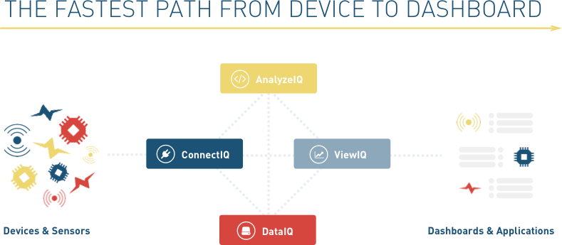

TEMPOIQ
product strategy, design
As sole designer of a Series B startup, I helped formulate product strategy for a company pivot. I researched, designed, and styled a B2B analytics platform for Internet of Things clients.
LET'S DIG IN
Client
TempoIQ, B2B analytics platform for Internet of Things (IoT). Former Techstars startup with $4M in funding.
Objective
Product is pivoting from an API service to a SaSS business product. Guide product vision through researching requirements. Deliver UX for new product offerings: ConnectIQ, DataIQ, AnalyzeIQ, and ViewIQ. Create an extensible brand identity, style guide, and new website.
Users
Managers, developers, marketers, engineers in IoT space.
Cases
DataIQ: Quickly view, manipulate, and export data and reports.
AnalyzeIQ: Perform powerful queries and manipulations without coding.
ViewIQ: Gain insights by creating, monitoring, and sharing visualizations.
COMPETITIVE ANALYSIS
IoT Analytics Platforms
Segmented by Target User
PERSONA
Primary User Persona & Buyer Persona
Segmented by Target User
REQUIREMENTS GATHERING
What is your product’s value proposition? Why not build analytics in-house?
Speed, cost, independence.
Live data is very valuable. Teams no longer have to wait days or weeks to get updates. Complex data manipulation requires a lot of time and effort for an in-house team to build. After ConnectIQ is set up, a non-technical user can plug and play to get insights without needing the help of technical staff.
How do we get the data to the business user?
Connect data downstream.
Developers need to connect the raw data. They should be able to monitor live data and troubleshoot any problems. This introduces a secondary persona that is very important to product function but is not a buyer persona.
Internet of Things is incredibly broad - how do you design a great experience across so many different use cases?
Through research, I discovered that there are two main data types: periodic and trigger-based. Periodic data is constantly being sent, like solar panels. Trigger-based data is only sent if some action is performed, such as a smart basketball. I designed for different use cases and workflows depending on this important difference.
CONNECTIQ
Step 1: Connect data source to TempoIQ in the cloud or on premise.

DATAIQ
Step 2: Export raw data, create reports, and perform calculations seamlessly.
VIEWIQ
Step 3: Visualize your data through plug and play dashboards.
STYLE GUIDE
TAKEAWAYS
There is a tradeoff between flexibility and focus. Spanning so many different industries, the UX needs to be robust to support varied use cases.
The product was highly technical. There was a lot of domain knowledge to absorb during onboarding. Due to the hardware component, error handling and edge cases were particularly difficult.
The Internet of Things is a young industry. There is a lack of industry standards of everything from basic terminology to product awareness. This presents a unique challenge in research and implementation.
TL;DR
too long; didn't read
Goal
Transform the product from an API to a full business suite for IoT analytics under a tight timeline.
Challenge
Hard to design a robust experience for many different use cases spanning many industries. Collaborate with the CTO and CMO everyday on product vision, requirements, and design.
Learned
Accommodate many different buyer and user personas, use cases, and user workflows. All workflows need to connect seamlessly. A robust data stream needs to support an intelligent interface.